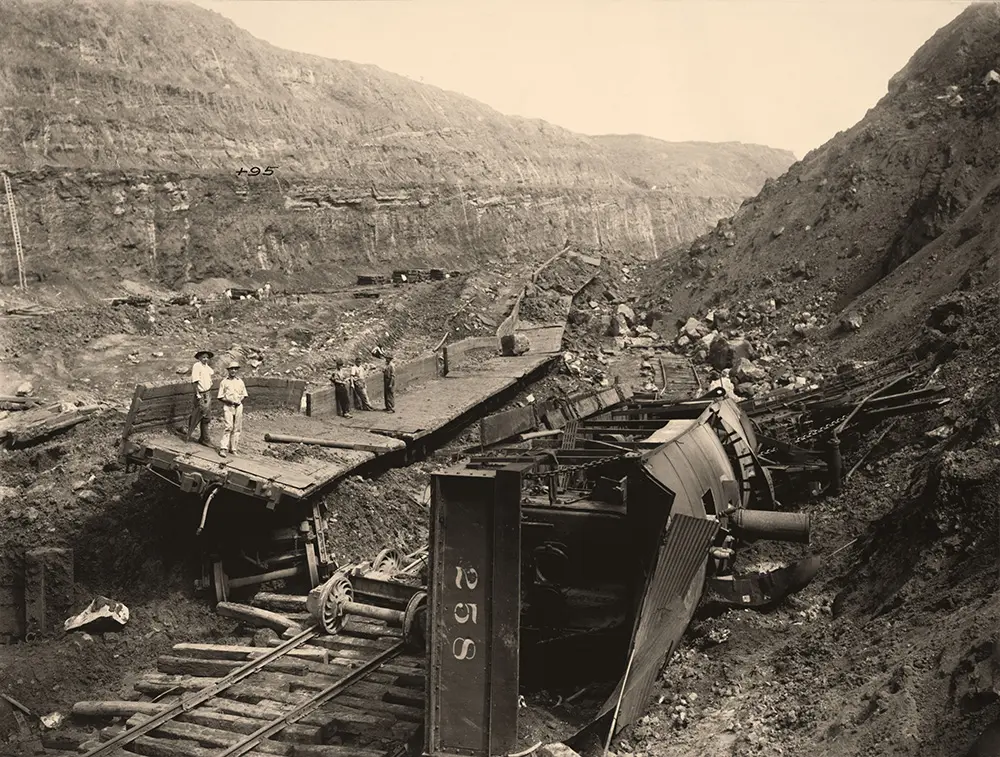
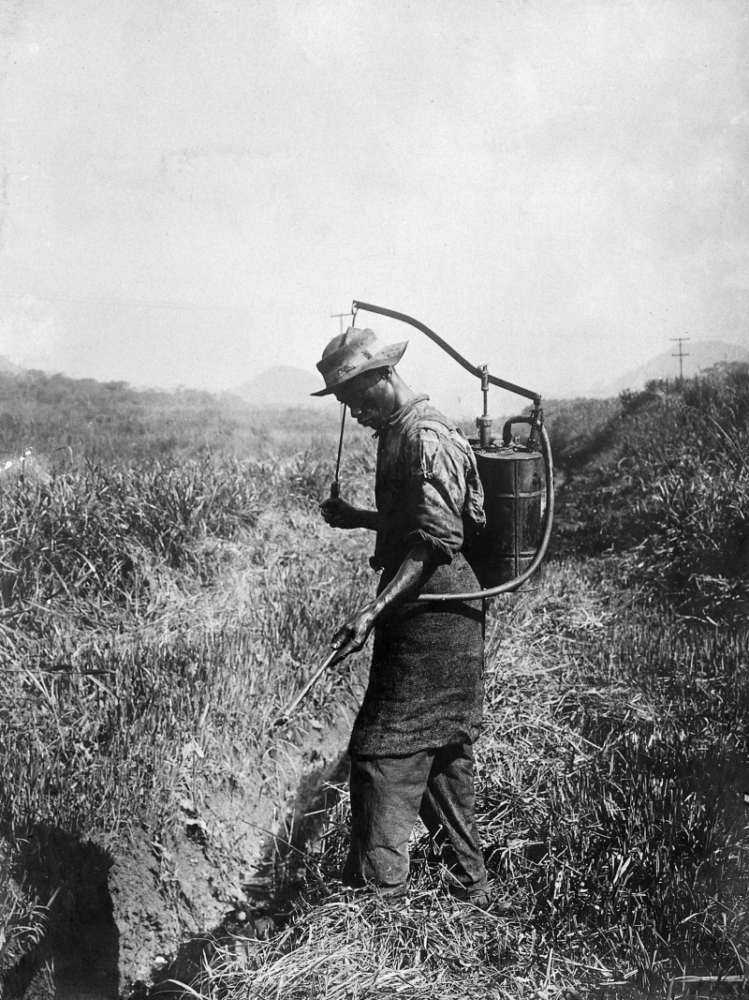
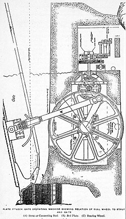
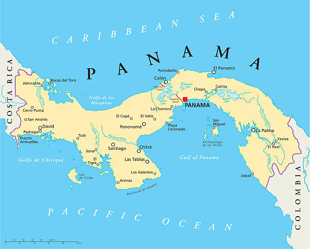

Home Page
Building the Panama Canal was one of the most dangerous and massive engineering projects in human history. In the 1880s, a French team tried to dig the canal, but tropical diseases and harsh terrain killed over 20,000 workers, forcing them to give up the project.

When the United States took over construction in 1904, workers faced constant landslides, equipment accidents like train derailments in the steep cuts, and deadly disease outbreaks. Engineers had heavy machinery, but if workers were sick or injured, progress ground to a halt. Success required revolutionary breakthroughs in both sanitation and mechanical engineering.
The Medical Innovation, Defeating Yellow Fever
For centuries, people incorrectly believed Yellow Fever was spread by foul air or dirty clothes. Cuban physician Dr. Carlos Finlay and U.S. Army doctor Walter Reed proved that Yellow Fever and Malaria were actually transmitted by mosquitoes.
Dr. William Gorgas headed the sanitation campaign in the Canal Zone. Despite skepticism, Gorgas implemented a thorough mosquito eradication plan across the territory.

- Oil on Standing Water: Teams sprayed larvicide oil over ditches and marshes so mosquito eggs could not hatch.
- Window Screening: Workers installed wire mesh screens on living quarters to keep insects outside.
- Fumigation Squads: Crews systematically fumigated buildings using pyrethrum powder to kill adult mosquitoes.
By December 1905, Yellow Fever cases plummeted, and by 1906, the disease was eradicated from the Canal Zone.
The Engineering Innovation, The Water Lock System
Because Panama's central mountainous region rises well above sea level, a sea-level canal was impossible. Engineers designed a lock system acting as water elevators to lift ships over the Continental Divide.

How the Lock System Works
- A ship enters the lock chamber from sea level.
- Massive lock gates—driven by heavy bull wheels and strut arms (shown in diagram)—seal the chamber.
- Culverts fill the chamber with water, raising the ship to the next level until reaching Lake Gatún (85 feet above sea level).
- After navigating across the lake, step-down locks lower the vessel back to sea level on the opposite ocean.
Impact and Legacy
Opened in 1914, the Panama Canal fundamentally altered international maritime trade and public health standards worldwide.

Global Trade: Prior to the canal, vessels traveling between New York and San Francisco had to navigate around Cape Horn at the tip of South America—a hazardous 13,000-mile journey. The canal cut the voyage to roughly 5,200 miles, saving weeks of transit time and lowering trade costs.
Public Health Advancement: Dr. Gorgas’s successful vector control methods proved that large-scale disease control was achievable, setting a model for public health programs across the globe.
Research Sources and References
1. U.S. National Archives
Article, National Archives Record Group 185: Records of the Panama Canal
2. Encyclopedia Britannica
Article, Panama Canal, History, Building, Locks, and Map
3. U.S. Department of State
Article, Building the Panama Canal, 1903 to 1914
4. U.S. National Library of Medicine
Article, William Crawford Gorgas and the Eradication of Yellow Fever in Panama